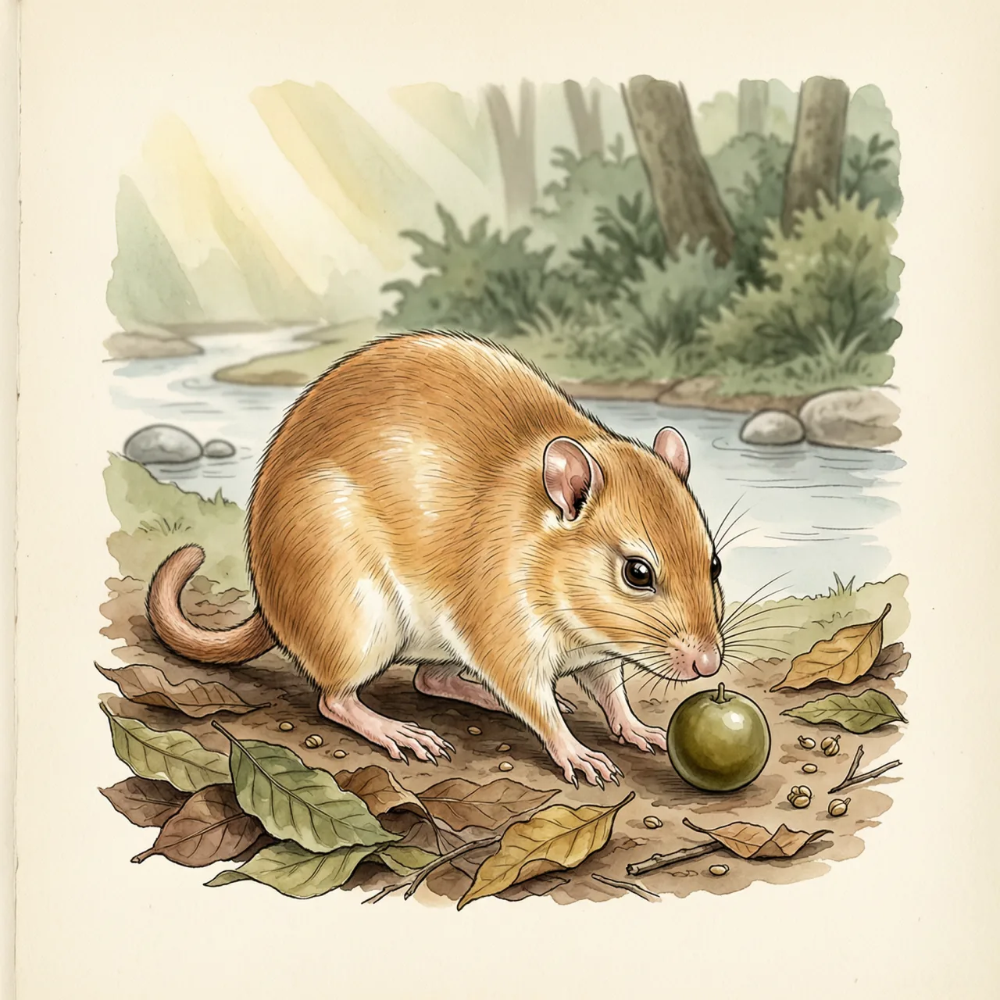
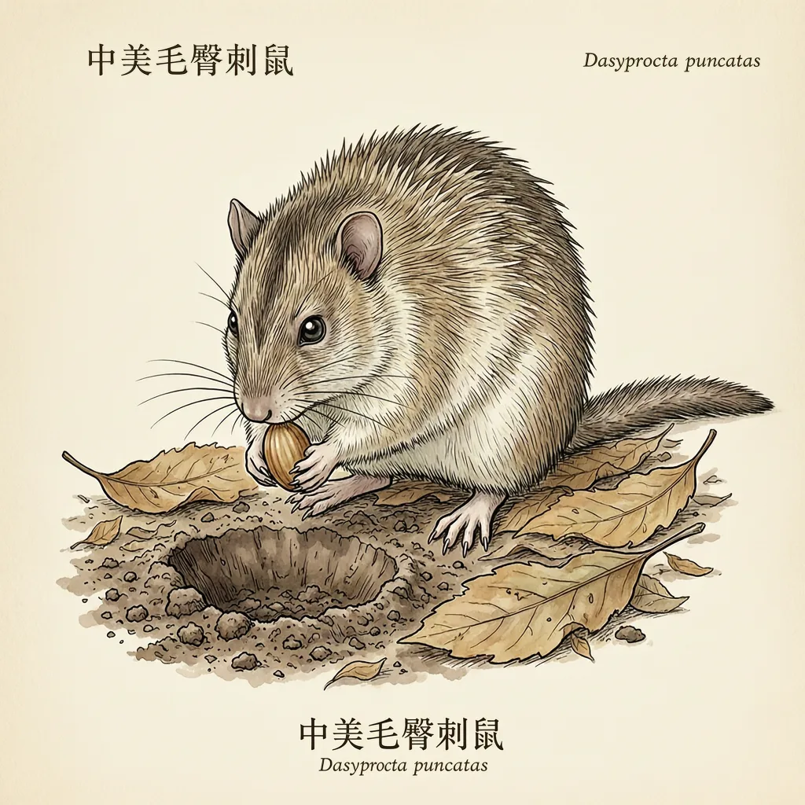

中美毛臀刺鼠是刺豚鼠科的一夫一妻制日行性啮齿类，从墨西哥恰帕斯一路散布到阿根廷北部，住在海拔可达2400米的热带林地，怕热而在水边打洞。它能听见果实落地声，果多时逐颗埋藏种子；被遗忘的种子就地萌发，顺手种出一片林子。
在中美洲的高地上，它能住到海拔2400米，但洞穴始终挨着水。这不是为了喝水方便——中美毛臀刺鼠怕热，得贴着溪流或水塘才能熬过正午，它在水边挖细小的洞，把家安在湿气旁边。它的分布几乎横贯美洲中部到南部：由恰帕斯州和犹加敦半岛向南，经哥伦比亚、委内瑞拉、厄瓜多尔，再从秘鲁、玻利维亚、巴西、巴拉圭西南一路伸到阿根廷北部，古巴和开曼群岛的种群则是人带过去的。
果实是中美毛臀刺鼠的主菜，它凭听觉搜寻结果实的树：果子一落地，它在远处听见就赶过去。食物丰富时它开始存粮——挖个坑，埋进种子，再赶下一个点位，偶尔才找点蟹或菜蔬换口味。这些埋藏点分布在它自己的地盘里：这个物种极重领域，雄鼠见入侵者就袭击，等于顺带看守了这份家底。它栖于地上、以脚趾行走，后脚三趾的爪硬得像蹄，适合高速奔跑，能跳高于6尺，抢收和撤离都靠这双腿。
这套储粮系统里最有意思的是失误。埋下去的种子并非都会被找回，没被吃掉的就地萌发——一只中美毛臀刺鼠一年里不经意就在领地内种下不少树苗。另一件反直觉的事：它本是日行动物，可一旦被猎得狠了，同一个种群会把活动改到夜间，像把时钟整个挪了一格。它平均能活13.8岁，只要被忘掉的那批种子够多，它住的这片林子，就会慢慢变成自己手种的样子。
